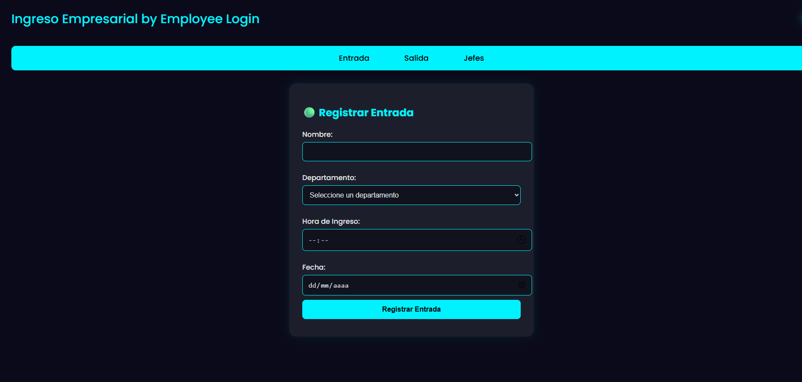

Sistema web diseñado para que las empresas puedan llevar un control digital de la asistencia de sus empleados. Reemplaza los registros manuales en papel permitiendo marcar entradas y salidas desde cualquier dispositivo con acceso al navegador.
El frontend usa HTML y CSS con diseño oscuro y acentos en cyan. El backend en PHP procesa los formularios y realiza las operaciones sobre la base de datos MySQL. El sistema valida que no existan duplicados para la misma jornada y permite a los supervisores consultar en tiempo real quién está presente y en qué horario ingresó.